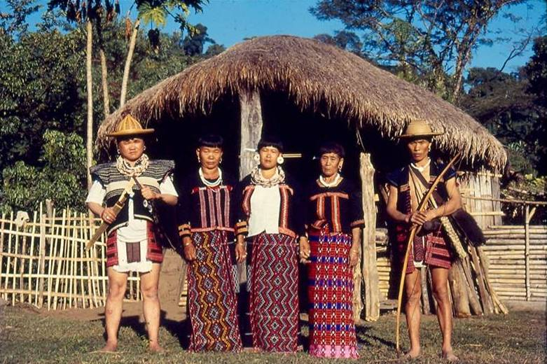
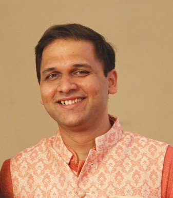
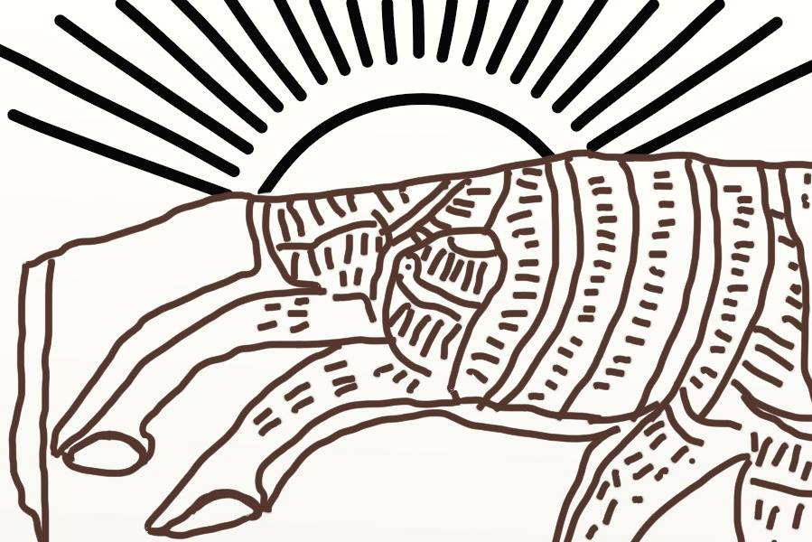
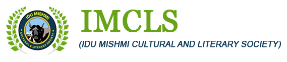

Language Revitalization: A case for Idu Mishmi
Akhilesh K R
Who am I?
I am a Language Researcher working on Indic languages (particularly North East Indian languages).
I am currently managing Tech and Partnerships with a few Indigenous communities of North-East India.
Prev: Civicdatalab, Vernacular AI & Ramco Systems
Staying centered around what matters
Indigenous people represent 5% of the world’s population, but they speak two-thirds of the world’s 7,000–7,500 spoken languages. Of those languages, about one-third are in some stage of language loss (Lewis and Simon 2016), and as many as 90% are predicted to fall silent by century’s end (UNESCO Ad Hoc Expert Group 2003).
Arunachal Pradesh is one of the linguistically richest and most diverse regions in all of Asia. In part due to this high diversity, a Hindi-based creole has been rapidly sweeping the state in recent years.
This has led to the sudden and in some cases severe endangerment of several of the state’s indigenous languages (Modi et. al, 2006).
Home
- Idu Mishmi is primarily used in Rural setting - Dibang Valley District of Arunachal Pradesh with some settlements in Lohit and E. Siang.
- However, the ‘Upper’ Idu (Luoba) live towards the Tibetan border and there are some villages in China (Sun 1983).
- Idu Mishmi belongs to Tibeto-Burman stock of Sino-Tibetan language family.
- The 1971 census recorded around 7700 individuals self-identifying as Idu Mishmi, although this is no measure of language competence.

Home (in real life)


Credits: https://alchetron.com/
Idu fam
 Credits: Onkar Pradhan
How it all began
- Started with a proposal to build online dictionary and speech corpora for Nyishi language with Nyishi Elite Society and RIWATCH.
- Arunachal trip happened to work on Idu Mishmi.
Little by little does the trick
A preliminary survey was conducted to assess the state of the language and how people of different age group really feel about using it.
The language is still spoken by a small group of older speakers within the community and the aim is to extend the use of the language into younger generations of speakers.
Several brainstorming sessions to obtain a long view of the revitalization process.
Adapting to a Modern World
Linguistic descriptions were first developed and published only in 2020 by Roger Blench et al.
Idu Mishmi language movement started with adapting Devanagari script in 1980s. Only recently in 2020, an IPA based script was developed by Dr. Roger Blench et al.
There is no written literature available.
Audio and Video recordings of Death Rituals, Folk tales, Marriage Ceremonies and other personal stories are available.
An interesting book about textiles that describes the design patterns in their traditional clothing is available too!
A few more findings..
From the survey and personal experience it was clear that internet connectivity is very sparse but a lot of people owned smartphones.
So many Vloggers and K-Pop fans!
People in their 20s (and below) and a few in their 30s can’t talk fluent Idu Mishmi.
There are no higher education (above diploma) colleges in the area.
Origin of E-dictionary
- Primarily we set out to address the youth and children through technology for language learning.
- Dictionaries are of great help in learning a language.
- The ground work was done by Dr. Roger Blench team in procuring the Idu words in IPA-based script. We converted them to Roman and revalidated.

Offline Dictionary App
What?
- An offline English to Mishmi (Idu) android application
- The dictionary has a total of 981 words.
For Whom?
- The youth of the Mishmi (Idu) community
- Native speakers of Mishmi (Idu)
- Mishmi (Idu) language enthusiasts
Features
- Use without internet connection!
- Fuzzy search – find a word even if you don’t know exactly how it is spelled
- Provide Feedback
Online version
e-Reader app
- Android application for reading ebooks in Mishmi (Idu) language.
- Works without internet!
- User can store a large number of e-books in this application.
- Easy navigation and user-friendly reading layout.

The Team

The Now
- We have a Youtube Channel for language learning.
- Dictionary app is getting the audio support and a better theme.
- Collaborated with Pratham books for translations at scale.
- We are in the process of collaborating with the government, different language revitalization organisations, publishing houses and universities.
Scope for tomorrow
- Interactive applications for popularising vocabulary of the language.
- Creation of Image Text datasets, Speech corpora and Parallel text corpora.
- We want to train community members in documentary techniques in order to create a rich archive of Idu Mishmi.
- Focus on language pedagogy.
What is VANI?
Vernacular Archive of Northeast India - VANI for short - is a non-profit initiative aimed at documentation, digitization and development of technology tools for low-resource languages of the Northeast India.
Through VANI, we work towards Language Revitalization of northeastern languages so that they remain alive and the diverse traditional knowledge, wisdom and worldviews are preserved.
VANI Team
 Rutwik Phatak
Pamir Gogoi
Akhilesh K R
more contributors here..
Many thanks to..
 RIWATCH
 IMCLS
dream
I look forward to a day when every Indigenous child is able to study in their own language and most importantly grow up speaking their language.
Get in touch!
Akhilesh K R
+91-9902914207
akki.kr94@gmail.com
More about me: https://akkikek.xyz/about/
More about VANI: https://projectvani.org/
Link to slides: https://akkikek.xyz/presentations/idu.html